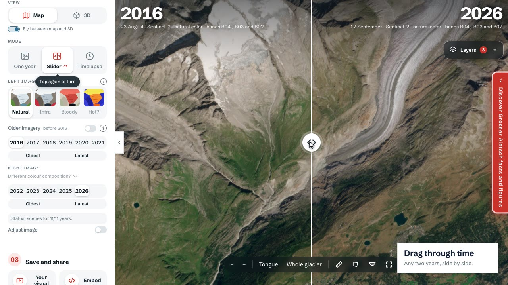

See how glaciers change, from space.
Real satellite pictures, one clear summer scene per year. Fly over the ice in 3D, slide between years, then make a picture or video of your own.
Glacier tongue
What is a glacier tongue?
Every glacier ends in a tongue, the lower end of the ice. When a glacier changes in size, its tongue advances or retreats, and the change can be so large that it is visible from space.

Gallery
Made by visitors.
Pictures exported from the studio and shared with the gallery.
Choose a glacier
Find your favourite glacier
Search for a glacier, or choose one in the list or on the map.
In development. You can fly to these glaciers, but their pictures are not open yet.
This tongue isn't ready for Space yet.
Two fingers to move and zoom the map.
About Tongues from Space
Glaciers don’t talk, but their tongues tell all.
A before-and-after image is understood at once and remembered. So the pictures come first here, and the figures sit next to them.
The project
Tongues from Space shows the tongues of glaciers in real satellite images, one clear late-summer scene per year, next to published figures.
It is a way to see and understand glacier change. The Size page helps you understand scale, the Studio lets you investigate change, the Gallery is for discovering and sharing, and the Field Notes tell the stories behind the data. Every glacier is shown the same way, so its tongue can be followed from one year to the next.
About me
I am Jochem Braakhekke, a Dutchman living in Switzerland. I have worked on glaciers around the globe and guided polar expeditions in the Arctic and the Antarctic. I studied Earth Sciences at the University of Amsterdam and ETH Zürich, and I am an academic associate at the remote sensing lab at UZH and a scientific consultant at the Swiss National Point of Contact for Satellite data (NPOC). Tongues from Space is a personal project, made independently of my work at UZH and the Swiss NPOC.
Acknowledgments
Tongues from Space builds on the work of others, and I am grateful to Copernicus and the Copernicus Data Space Ecosystem for Sentinel-2, USGS for Landsat, GLAMOS for the Swiss glacier figures, swisstopo and Mapterhorn for part of the terrain, and EOX and the OpenStreetMap contributors for the background map. Each figure on the site carries a note on where it comes from, so the work behind it stays visible.
Data and method
What is measured and what is computed.
The pictures are real satellite images. The figures come from published sources. Where the record has gaps I fill them by computation, and I mark it.
This site makes scientific monitoring easier to explore. It does not replace it. (In Switzerland it complements GLAMOS and the other published sources, which stay the authority for the figures.)
Real satellite images, with their date
Each picture is an actual Sentinel-2 or Landsat scene. I crop it to a fixed frame and set the colours. I never paint in glaciers or generate scenes.
One clear picture per year
You do not have to wade through gigabytes of scenes. Every late-summer scene is scored for cloud, cloud shadow and snow on the tongue, the same way for every glacier and year. The clearest wins.
Gaps are filled, not hidden
Landsat 7 scenes after 2003 have missing stripes. I fill them from other scans of the same place.
Where no measured surface exists for a year, the 3D view uses an estimate from published elevation models and mass balance. That is my own computation, not a measurement.
Figures as the source states them
Lengths, areas, volumes and thicknesses appear as published, each with a note on where it is from. A value I calculate is marked as computed and never credited to the source. If I cannot read a figure in its source, I leave it out.
Reviewed and tested
I review each glacier step by step: frame, outline, pictures, 3D view, figures and texts. Figures are compared with their source pages, and automated tests run before every release.